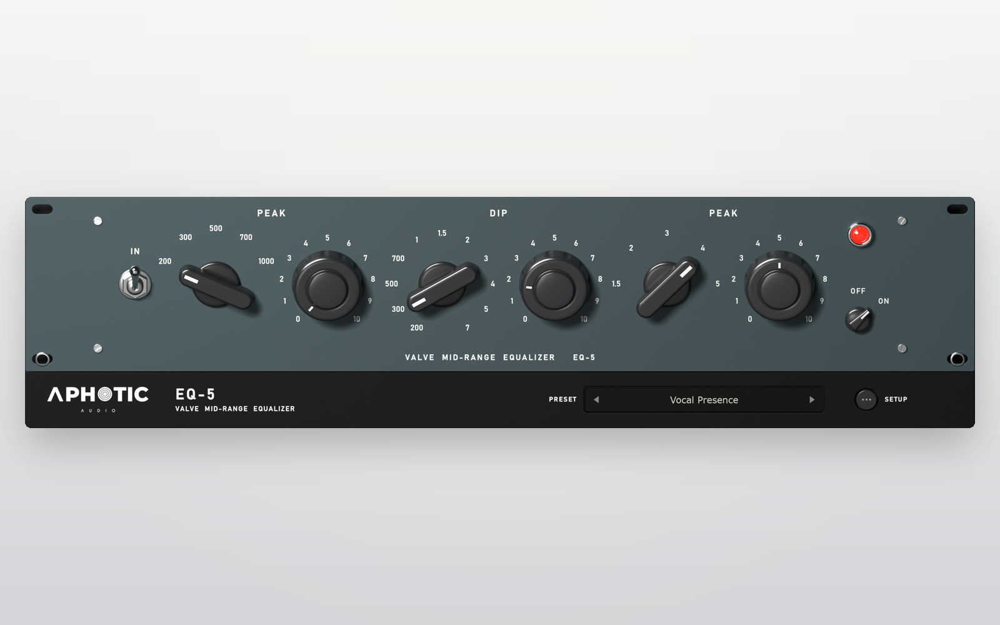

Midrange EQ New
EQ-5
A three-section midrange equalizer in the tradition of the classic valve units: lift the body with the low-mid peak, take out the box with the dip, bring the voice forward with the high-mid peak. The sections meet like a passive network, so they shape each other instead of cancelling.
- Low-mid peak at 200, 300, 500, 700 Hz or 1 kHz, up to +10.7 dB; a wide, gentle bell
- Dip from 200 Hz to 7 kHz in eleven steps, down to -11 dB
- High-mid peak at 1.5, 2, 3, 4 or 5 kHz, up to +8.9 dB, narrowing as it goes up
- A valve make-up stage and output transformer: a soft second harmonic and bass that thickens when pushed; Analog Drive for more, or switch the colour off for a clean EQ
- EQ IN and POWER switch without clicks; POWER off passes your audio untouched
- SETUP: live response curve, input and output trim, level match, oversampling, window size 75 to 200 %; 17 presets
Free with an Aphotic Audio account. Installs in one click.

- Latency
- 6 samples (0.13 ms at 48 kHz), reported to your DAW
- Formats
- Windows VST3 (64-bit), macOS VST3 and AU (Apple silicon and Intel)
- Version
- 1.0.3
- License
- Free with an Aphotic Audio account
The curves were fitted to measurements of a software model of the classic unit; no hardware was measured. EQ-5 is an original plug-in, not made or endorsed by the makers of the original.